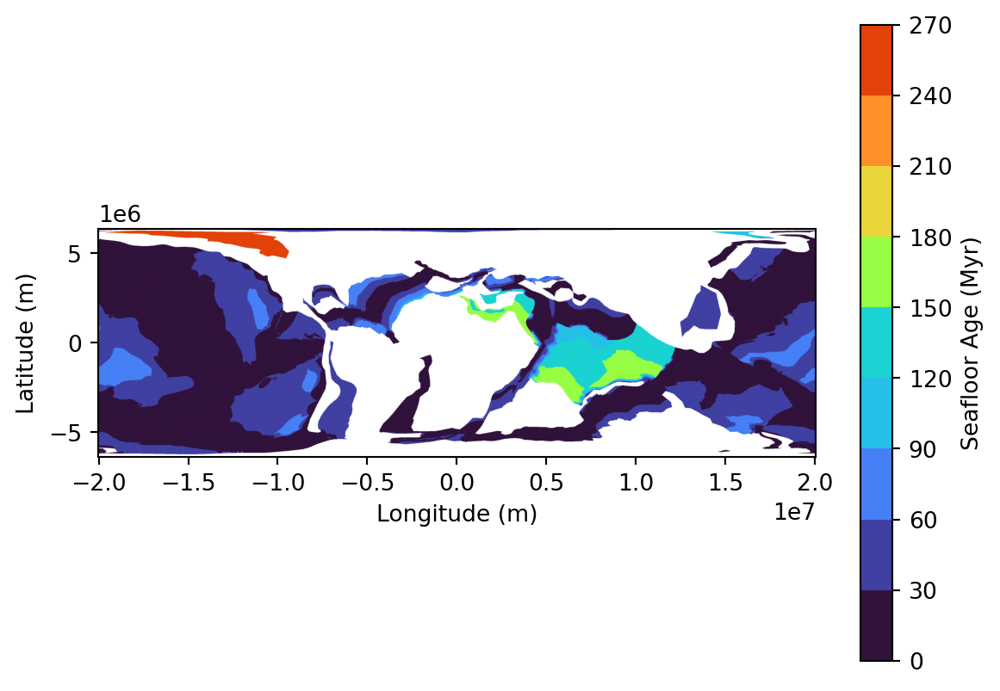
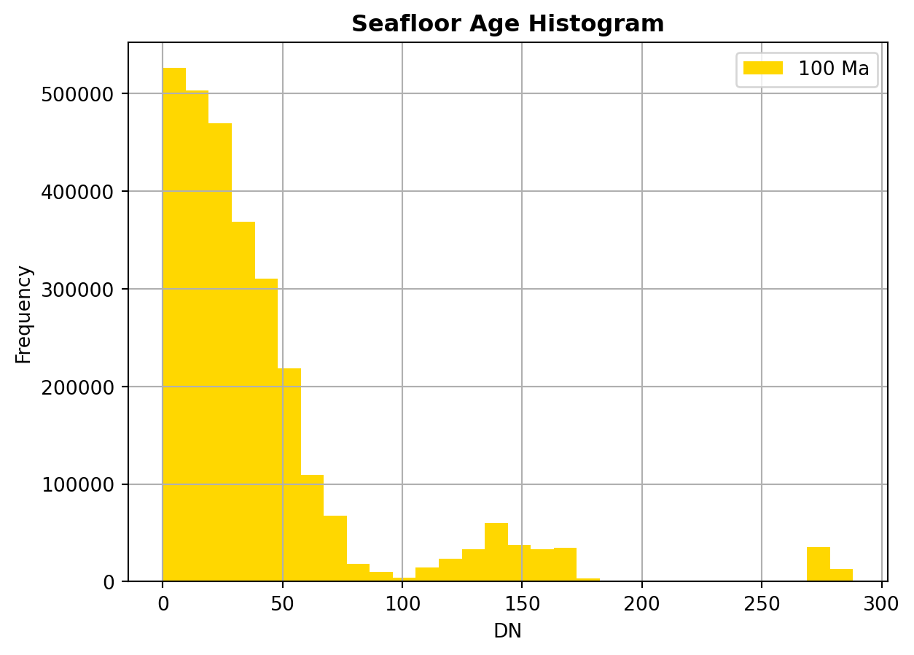
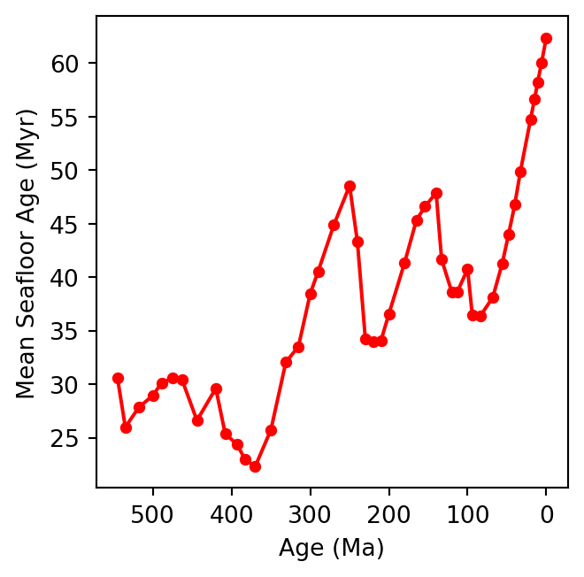
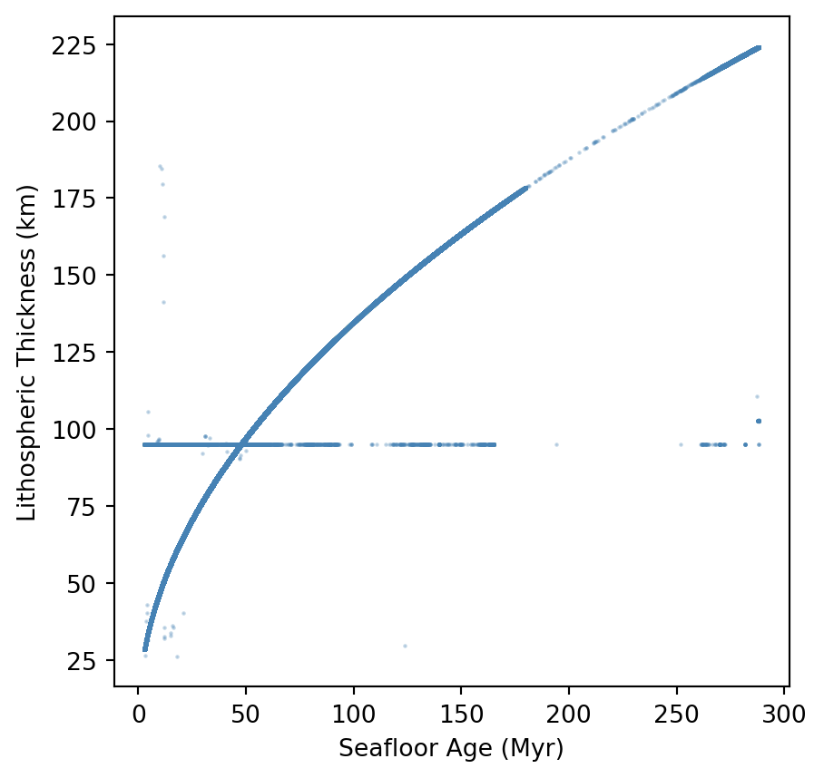

def construct_wcs_url(layer_name,
time,
base_url= "https://geoserver.panalesis.org/geoserver/",
workspace = "panalesis_atlas",
service_type="WCS",
service_version="1.0.0",
request_type = "GetCoverage",
crs = "EPSG:54034",
bbox="-20037508.34,-6363885.33,20037508.34,6363885.33",
resx = "10000",
resy = "10000",
format = "GEOTIFF"):
url = (rf"{base_url}{workspace}/{service_type.lower()}?service={service_type}&version={service_version}&"
rf"request={request_type}&"
fr"coverage={workspace}:{layer_name}&"
fr"crs={crs}&"
rf"bbox={bbox}&"
rf"resx={resx}&"
rf"resy={resy}&"
rf"time={time}&"
rf"format={format}")
return urlChapter IV: Exercise 1 - Part 2
How Fast Was Earth’s Engine Running?
NoteThis exercise in brief
Big Question
Did faster spreading rates in the past lead to younger seafloor and thinner lithosphere? How did crustal architecture evolve through time?
What You Will Do
You will test a geodynamic hypothesis using multiple paleogeographic and structural datasets from the Palaeo Data Cube. Starting with one time slice, you will:
- Map seafloor age, crustal thickness, and lithospheric thickness.
- Compute global averages and distributions.
- Compare two time slices to see if patterns change.
- Finally, you will extend your analysis to the entire Phanerozoic and visualize trends.
Why It Matters
The age and thickness of Earth’s oceanic crust and lithosphere reflect plate tectonic processes and mantle dynamics. Understanding these changes helps explain supercontinent cycles, ocean basin evolution, and even long-term climate regulation.
Your Tasks
Single Snapshot Analysis:
1.1. Load seafloor age, crustal thickness, and lithospheric thickness for one time slice (e.g., 100 Ma).
1.2. Compute mean values and visualize maps.
1.3. Plot histograms of seafloor age distribution.
Compare Two Worlds:
2.1. Repeat for another time slice (e.g., 250 Ma).
2.2. Compare averages and distributions.
2.3. Discuss whether the data supports faster spreading at one time.
Deep-Time Trends:
3.1. Automate your workflow for all Phanerozoic slices.
3.2. Plot time series of mean seafloor age, crustal thickness, and lithospheric thickness.
3.3. Interpret major trends and link them to tectonic events.
Skills You Will Gain
- Handling multiple raster datasets in Python.
- Computing global and zonal statistics.
- Visualizing maps, histograms, and time-series plots.
- Testing hypotheses with real geoscience data.
Points for Discussion
Does the data support the idea that faster spreading rates lead to younger seafloor?
How do crustal and lithospheric thickness trends relate to supercontinent cycles?
What assumptions did you make about data interpretation and resolution?
What uncertainties exist in these reconstructions?
Step-by-step instructions
In the first part of this exercise, we focused on palaeogeography, and learned basic tools to:
- Construct a Web Coverage Servive (WCS) request through a simple URL using the
requestslibrary - Access the data using the
rasteriolibrary avoiding going through a manual download - Plot the map using the
matplotliblibrary - Understand the metadata associated with the data we accessed
- Extract simple statistics from a single map (land & ocean areas)
- Generalize this analysis on all available time steps
In this second part, we will follow a similar path, but we will look other maps from the same source. The idea is to have a look at other aspects of the Earth system that informs us about processes taking place in its inner layers.
We will particularly have a look at three layers that are available through the same WCS requests which are (i) seafloor ages, (ii) crustal thickness, and (iii) lithospheric thickness.
As we did before, we will use the panalesis_atlas data sore on GeoServer, which serves data in world cylindrical equal area (WCEA), using the ESRI:54034 projection. This is done to ensure proper area calculations, as opposed to data in more common CRS such as EPSG:4326, which use degrees units.
1. Single Snapshot Analysis We will first load the three layers for one single age, similar to what we did in the previous part (100 Ma). You have noticed that we used the WCS url request format quite a few times. Instead of repeating the entire code every time, we can define a quick function that we can call with the correct parameters.
The idea is to simplify the next steps where we will handle multiple layers at the same time, for a given age.
→ Notice the function parameters order and syntax, what do you observe ?
We will use this function on our layers of interest, and see if we can plot them easily. For this, we can also create a function to load and plot the maps with a proper color ramp, using the URL, the defined color ramp and a title.
import requests
import numpy as np
import matplotlib.pyplot as plt
from matplotlib.colors import ListedColormap, BoundaryNorm
from rasterio.io import MemoryFile
def plot_map(wcs_url,colormap,title):
data = requests.get(wcs_url).content
with MemoryFile(data) as memfile:
with memfile.open() as dataset:
raster = dataset.read(1).astype(float)
nodata = dataset.nodata
if nodata is not None:
raster = np.ma.masked_equal(raster, nodata)
else:
raster = np.ma.masked_invalid(raster)
bounds = [entry[0] for entry in colormap]
colors = [entry[1] for entry in colormap[:-1]]
cmap = ListedColormap(colors)
norm = BoundaryNorm(bounds, ncolors=len(colors))
cmap.set_bad(color='white')
bounds = dataset.bounds
extent = [bounds.left, bounds.right, bounds.bottom, bounds.top]
fig, ax = plt.subplots()
img = ax.imshow(raster, cmap=cmap, norm=norm, extent=extent, origin="upper")
cbar = plt.colorbar(img, ax=ax)
cbar.set_label(title)
ax.set_xlabel("Longitude (m)")
ax.set_ylabel("Latitude (m)")
plt.show()
return rasterOnce these two functions are defined (url constructor + plotter), it becomes very easy to call them. Just define a color ramp of your choosing and call it. Let’s focus on seafloor ages:
# Seafloor ages
seafloor_ages_url = construct_wcs_url(layer_name="seafloor_ages", time="2100-01-01T00:00:00.000Z")
print(seafloor_ages_url)
sf_colormap_entries = [(0, "#30123b", "0"),(30, "#4040a2", "30"),(60, "#4680f6", "60"),(90, "#25c0e7", "90"),
(120, "#1ad2d2", "120"),(150, "#96fe44", "150"),(180, "#e9d539", "180"),(210, "#fe9029", "210"),
(240, "#e2430a", "240"),(270, "#c52603", "270")]
raster = plot_map(seafloor_ages_url,sf_colormap_entries, "Seafloor Age (Myr)")https://geoserver.panalesis.org/geoserver/panalesis_atlas/wcs?service=WCS&version=1.0.0&request=GetCoverage&coverage=panalesis_atlas:seafloor_ages&crs=EPSG:54034&bbox=-20037508.34,-6363885.33,20037508.34,6363885.33&resx=10000&resy=10000&time=2100-01-01T00:00:00.000Z&format=GEOTIFF
Now that we have retrieved the data related to seafloor ages, we are going to take a look at how the ages are distributed. In other words, we are going to investigate if, for our 100 Ma reconstruction, the oceanic crust is rather young, old, intermediate or if the distribution of ages is more complex.
A simple method to do this is to create an histogram that will show the pixel counts for a given number of fixed intervals (bins). Fortunately for us, the rasterio library has an in-built function that directly creates an histogram from a raster. we can simply call it like this:
import rasterio
from rasterio.plot import show_hist
rasterio.plot.show_hist(raster, bins=30, masked=True, title="Seafloor Age Histogram", label="100 Ma")
→ What do you observe on the histogram ? How are the ages distributed ?
→Given your knowledge about the present-day world, can you guess what the distribution will be if we do a querry at 0Ma ? Try it !
Another very quick insights we can get is to calculate the mean value for a given age, by simply calling:
mean_age = raster.mean()
print(f"Mean seafloor age is {mean_age}")Mean seafloor age is 40.754735497973286We are now going to check this for the entire Phanerozoic, as we did for the land and ocean areas. Again, we will simply create a loop that will calculate the mean value of every available raster. Let us use the same function as before, with an update for default parameters that are (for our demo) not going to change
from xml.etree import ElementTree as ET
def get_available_times(layer_name,base_url="https://geoserver.panalesis.org/geoserver/", workspace= "panalesis_atlas", service_type = "WCS", service_version="1.0.0"):
describe_url = (
f"{base_url}{workspace}/{service_type.lower()}"
f"?service={service_type}&version={service_version}"
f"&request=DescribeCoverage&coverage={workspace}:{layer_name}"
)
response = requests.get(describe_url)
root = ET.fromstring(response.content)
times = sorted(set(el.text for el in root.iter() if el.tag.endswith('timePosition') and el.text))
return sorted(times)Which we can now use to retrieve all available time steps, and retrieve each map, calculate its mean age value, and finally plot a timeseries chart of the mean age evolution:
layer_name = "seafloor_ages"
times = get_available_times(layer_name=layer_name)
results = {}
for time in times:
geological_age = int(time[:4]) - 2000
wcs_url = construct_wcs_url(layer_name=layer_name, time=time)
data = requests.get(wcs_url).content
with MemoryFile(data) as memfile:
with memfile.open() as dataset:
raster = dataset.read(1).astype(float)
nodata = dataset.nodata
if nodata is not None:
raster = np.ma.masked_equal(raster, nodata)
else:
raster = np.ma.masked_invalid(raster)
mean_age = raster.mean()
results[geological_age] = {'sf_mean_age': float(mean_age)}
del data, raster
ages = list(results.keys())
seafloor_ages = [results[age]['sf_mean_age'] for age in ages]
plt.figure(figsize=(4, 3.5))
plt.plot(ages, seafloor_ages, color='red', marker='o', markersize=4)
plt.xlabel('Age (Ma)')
plt.ylabel('Mean Seafloor Age (Myr)')
plt.gca().invert_xaxis()
plt.gca().set_box_aspect(1)
plt.tight_layout()
plt.show()
→ What do you observe ? Can you guess the reason for these variations ?
In the last two time-series we plotted (land/ocean area , seafloor ages), we only considered one input map at a time with the rasterio library. This is good, but what if we want to “pack” different sources together and derive insights from several layers ?
For this, we are going to use xarray, a Python library that deals with multidimensional arrays. An array is a data structure that stores a collection of elements of the same type, organized in a grid-like structure where each element can be retrieved using its position. In our case, as our maps share the same resolution and extent, the elements inside our array are the map pixels.
Organizing our data in arrays will prove very useful for combined analysis of several variables. Below is a function that creates an array from a WCS URL:
import xarray as xr
import rioxarray
def load_raster_as_dataarray(layer_name, time, name):
url = construct_wcs_url(layer_name=layer_name, time=time)
data = requests.get(url).content
with MemoryFile(data) as memfile:
with memfile.open() as dataset:
raster = dataset.read(1).astype(float)
nodata = dataset.nodata
if nodata is not None:
raster[raster == nodata] = np.nan
raster[~np.isfinite(raster)] = np.nan
da = xr.DataArray(
raster,
dims=["y", "x"],
name=name
)
return daThis function opens a raster from a WCS URL as we did before, but then creates an xr.DataArray class object to create a multidimensional array: two spatial dimensions (x and y, according to the pixel index) desrcibing the position (index) of each pixel.
We can then create three data arrays (one for each layer), for a given time:
time = "2100-01-01T00:00:00.000Z"
sf_age = load_raster_as_dataarray("seafloor_ages", time, "seafloor_age")
crustal = load_raster_as_dataarray("crustal_thickness", time, "crustal_thickness")
litho = load_raster_as_dataarray("lithospheric_thickness", time, "lithospheric_thickness")As they share the same dimensions, these 3 arrays can be combined in a single xr.Dataset:
ds = xr.Dataset({
"seafloor_age": sf_age,
"crustal_thickness": crustal,
"lithospheric_thickness": litho
})The idea behind this construction is simply to get a dataset that has consistent coordinates and various pixel properties. The structure of our dataset will look something like:
Dataset
├── seafloor_age (y: 1273, x: 4018)
├── crustal_thickness (y: 1273, x: 4018)
└── lithospheric_thickness (y: 1273, x: 4018)
coordinates: x, y (shared)Taking advantage of this simple structure, it is now easier to have a glance at all variables with one simple call:
for var in ds.data_vars:
print(f"\n{var}:")
print(f" mean : {float(ds[var].mean()):.2f}")
print(f" std : {float(ds[var].std()):.2f}")
print(f" min : {float(ds[var].min()):.2f}")
print(f" max : {float(ds[var].max()):.2f}")
seafloor_age:
mean : 40.75
std : 48.63
min : 0.00
max : 288.00
crustal_thickness:
mean : 17.90
std : 14.48
min : 6.01
max : 68.46
lithospheric_thickness:
mean : 92.02
std : 44.02
min : 0.00
max : 230.55Now, we will have a look at the relationship between the seafloor age and the thickness of the lithosphere. Let’s do a simple plot that will show this relationship. We first need to do some pre-filtering of our data. The code below will (i) “flatten” our multidimensional array into a single dimensional one, (ii) discard non oceanic pixels, and (iii) discard any invalid pixels:
age_flat = ds["seafloor_age"].values.flatten()
litho_flat = ds["lithospheric_thickness"].values.flatten()
ocean_mask = np.isfinite(age_flat) & (age_flat > 0)
age_valid = age_flat[ocean_mask]
litho_valid = litho_flat[ocean_mask]
both_valid = np.isfinite(age_valid) & np.isfinite(litho_valid)
age_valid = age_valid[both_valid]
litho_valid = litho_valid[both_valid]Once this filtering is done, we can plot our two variables:
plt.figure(figsize=(5, 5))
plt.scatter(age_valid, litho_valid, s=0.5, alpha=0.3, color="steelblue")
plt.xlabel("Seafloor Age (Myr)")
plt.ylabel("Lithospheric Thickness (km)")
plt.show()
→ What do you observe ? Is the relationship coherent with what you would expect from your knowledge ?
→ Can you find a mathematical function that describes this trend? Try using numpy.polyfit to fit a curve to the data.
TipLinks to useful libraries and tools
Python libraries
xarray— A Python library for working with labeled multi-dimensional arrays, providing a Dataset structure that combines multiple variables sharing the same coordinate system.rioxarray— An extension of xarray that adds geospatial capabilities, enabling CRS-aware operations on raster datasets directly within the xarray framework.